Si tienes alguna duda con lo del sistema SYSCA puedes buscar al creador que se encuentra en esta parte.
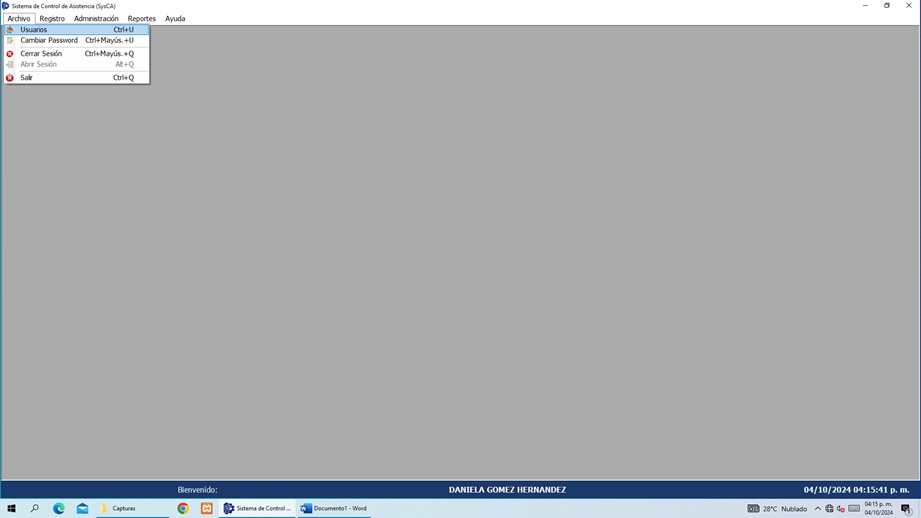
Al darle click en el boton de usuarios nos manda a este apartado que.
Aqui podemos agregar un usuario nuevo con las caracteristicas que nos pide ya sea de Administrador o de usuario normal que no te permite hacer los que el administrador puede.
En este apartado como el nombre nos dise cambiarle la contraseña, se empieza buscando al trabajador teniendo en cuenta la contraseña nueva que queramos ponerle ya que a continuacion nos pide agregarla, despues confirmar y para finalizar le das clic en modificar.
Pues en esta parte es cuando estamos en un usuario y queremos entrar a otro, mas que nada cundo no le queremos dar clic en cerrar el sistema si no que se puede cerrar sesion y volver a registrarte, por otro lado seria que el sistema esta trabado puedes cerrar sesion y volver a entrar y ya va a funcionar correctamente.
Al darle click en abrir sesion nos manda a este apartado.
En este apartado debemos de agregar nuestro usuario y nuestra contraseña, al darle click en iniciar entramos al sistema tambien podemos cancelar si no nos sabemos nuestros usuario.
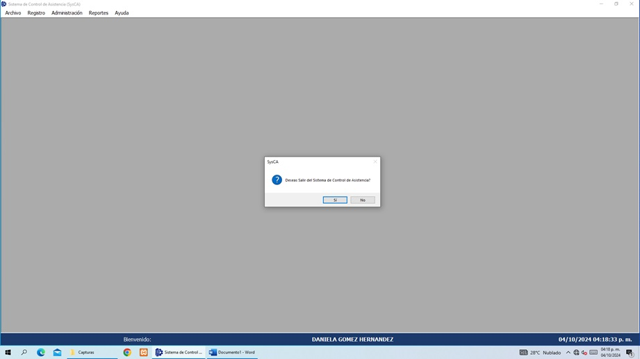
Cuando se traba el sistema o algo asi por el estilo podemos salir y volver a iniciar sesion, nos arroja un cuadro de dialogo si es que estamos seguros de salir o si nos arrepentimos y no salimos.
Al darle clic en el boton tipos de Trabajador podemos modificar, eliminar y agregar nuevos.
Tenemos que seleccionar un tipo al que el trabajador pertenece .
En este apartado tenemos que introducir el tipo y sabiendo si lo queremos modificar, eliminar o agreagar.
En ete apartado nos muestra las diferentes categorias que tienen los trabajadores y por ello tambien se pueden modificar, eliminar y agregar otras.
Por otro lado aqui se muestran todas las categorias que hay.
Al seleccionar el boton asignar Categoria nos aparece este apartado donse se puede apreciar que podemos agregar otra nueva si es que lo deseamos.
Podemos busacar por el nombre del trabajador .
Tambien podemos buscar por categoria ya teniendo seleccionado el sombre del trabajador, tambien se le puede poner las horas.
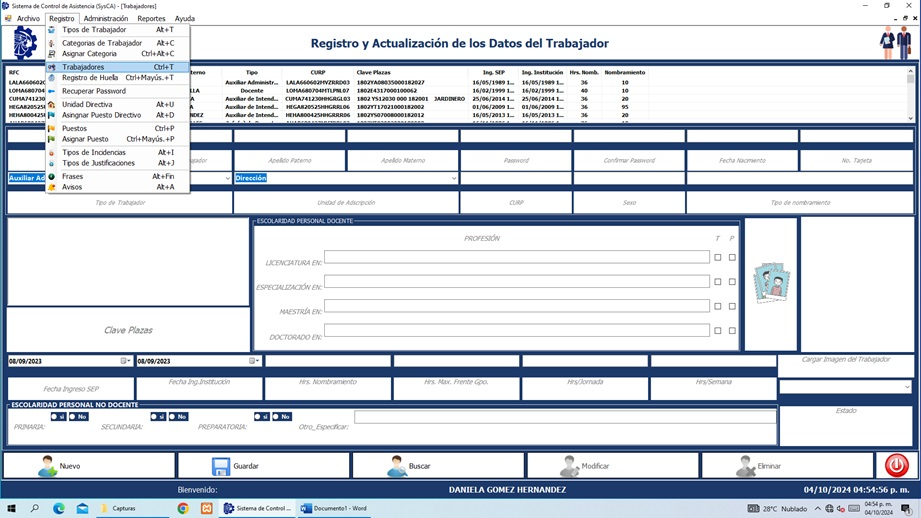
En el boton de trabajadores tenemos que agregar nuevos para que aparezacan en el sistema .
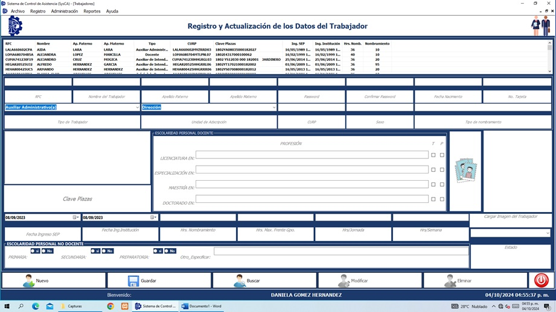
Tenemos que llenar cado uno de los campos, teniendo el horario y sus demas datos que te pide, por otro lado podemos modificar los datos de un trabajador, elimiar al trbajador. Al seleccinar un trabajador y luego le das clic en buscar te aparecera toda su informacion y se puede modificar mientras estes en el usuario de administrador.
Si poor alguna razon se perdio la contraseña del trabajador podemos entrar a este apartado.
Solo tenemos que seleccionar el nomnre del trabajador, le das click en buscar y te arrojara una imagen del trabajador, despues de ahi podemos agregar una contraseña y la verificamos nuevamente y le damos click en modificar y se actualiza la contraseña nueva del trabajador.
Al darle click en unidad directiva aqui podemos agregar un nuevo, editarlos, modificar y eliminar.
Al seleccionar a alguien le damos click en modificar y ya podemos hacer los cambios segun lo que deseamos realizar.
Al igual que lo demas da informacion sobre los puestos de los trabajadores y si queremos modificar esto, tambien tiene la fecha inicial de cuando se agrego el puesto al personal y la fecha en que terminara el puesto.
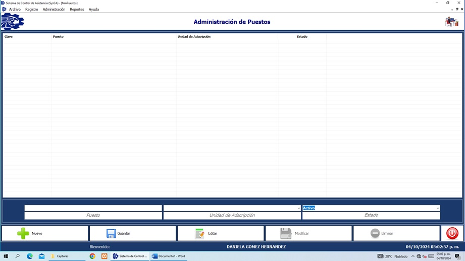
Se administran los puestos de los docentes, si algun docente ya no trabaja en el tecnologico se puede poner en su estado como inactivo estando en el usuario de administrador.
Al agregar un docente debemos de asignar un puesto pero en oficina, si se tienen que modificar se te ara llegar una lista.
Al decir incidencias sabemos que se refiere a un problema con algo para ello.
Tenemos que checar el sistema para ver las incidencias dependiendo la checa en que nos lo pidan, hay incidencias tanto para entrada como para salida.
Incindencia Entrada, ET-Entrada Temprana, E-Entrada, RA-Retardo Tipo A, RB-Retardo Tipo B, EN-No Registro Salida
Incidencia Salida, S-Salida, ST-Salida Tardia, SN-No Registro Salida
En este apartado podemos saber sobre los tipos de justificacion.
si alguien tiene incidencias y aun no estan capturadas, se te entregara unos oficios (papel) donde se nos proporciona la informacion que ocuparemos para que se le quite la incidencia.
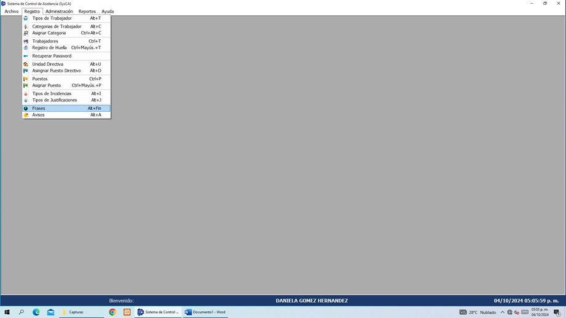
Las frases pueden motivar a uno a seguir adelante, estas dichas frases aparecen en la pc donde se registran la entrada y la salida los docentes.
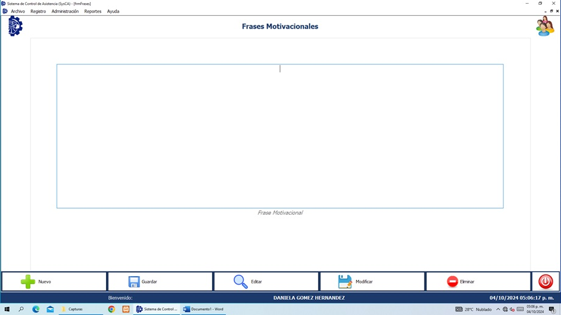
Aqui podemos agregar nuevas frases, editar, modificar y hasta eliminar.
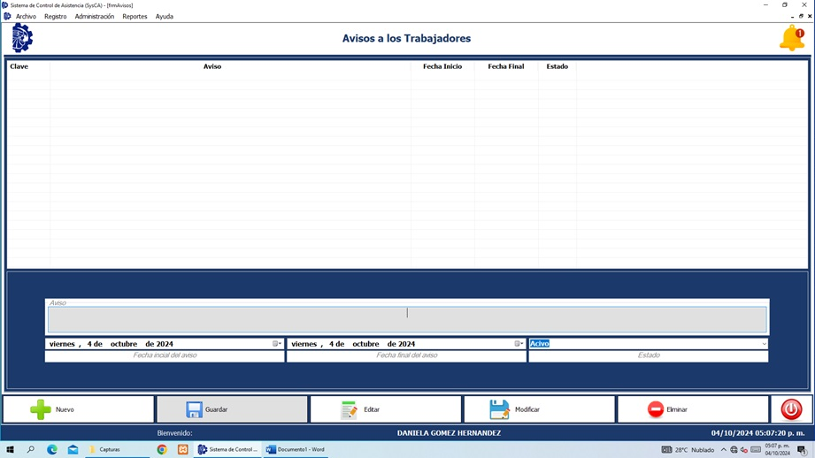
Asi como las frases tambien hay avisos, la mayoria de los docentes nada mas se registra entrada y su salida no le pone atencion a la pantalla y pues es ahi dinde aparecen los avisos, por igual estos se pueden editar, agregar y eliminar.
En este apartado se pueden realizar muchas cosas.
se pueden observar los demas periodos escolares, siguiendo los pasos que se te solicitan podemos eliminar, crear uno nuevo ediarlos, etc.
Teniendo creado el periodo escolar a un lado se le puede dar click, podemos darnos cuenta que se pueden poner los dias de suspencion, la gefa de la area te asignara el calendario escolar y checas las fehcas de acuerdo a eso puedes agregar los dias dependiendo el tipo de suspencion y solo le das click en guardar.
El significado de migrar horarios se entiende por pasar los horarios de un periodo escolar a otro.
Debemos de tener en cuenta que al pasar los horarios al nuevo periodo escolar este no se guardan solo se quedan ahi porque los profesores cada siclco escolar cambain de horarios.
los dos periodos deben de estar activos para que se puedan pasar correctamente
Al seleccionar este apartado.
Cada docente debera de entregar su horario ya correcto para poder editarlo en etsta parte del nuevo ciclo escolar que hayamos creado, esto es para editar su horario anterior al nuevo y solo se da click en guardar, se debe realizar uno por uno de todos los docentes.
Aqui es el ultimo paso para que queden guardados los horarios de los trabajadores.
Teniendo todos los horarios completos tienes que leer detalladamente lo que esta en el cuadro de dialogo, despues seleccionas el periodo escolar y esto hace que se guarden los horarios correctamente.
Por si pasa algo o se equivocaron en alguno horario puedes modificar le horario y volver a generar las entradas por periodo para que se guarden los cambios de la nueva modificacion
Si un docente no registra su entrada y salida se generan las incidencias, pues este apartado es para los registros tanto de entrada y salida.
Siempre que vallamos a registrar una entrada o una salida, tenemos que seleccionar el cuadrito de arriba en la parte derecha abajo del boton actualizar (desactivar temporizador) porque si no lo seleccionamos el sisytema se actualiza a cada rato y no te dejara registrar entrada o salida.
para que se regitre la entrada o salida de un docente tenemos que seleccionar igual un cadro que esta al lado izquierdo del (RFC), tambien si queremos registrar solo la entrada, salida o ambas se debe seleccionar en el apartado (Trabajaores a Detalle)
Esto va relacionado con los registros de asistencia, hay dos tipos Directivos y Personal en General.
Directivos: El gefe del area te proporcionara un oficio de comision en el cual ahi viene el motivo al cual va relacionado al (Tipo de Justificacion), tambien traera las fechas que se aplique esta justificacion .
Se tiene que seleccionar el cuadro de la (Clave) para identificar a quien va a justificar, se le da click en el boton guardar, para checar si se guardo correctamente, debemos seleccionar el circulito en (Incidencias Justificadas) ahi debe de aparecer el cambio con los datos que proporcionaste
General: aqui son los mismos pasos que en directivos, solo que si no encuentras un nombre en directivos lo puedes encontrar en esta parte.
Si algun docente quiere que lo registres en las jornadas extras puedes hacerlo, se agrega las fechas, los datos del docente y se guardan cambios y si le das click en (Cargar Jornadas Extras) debe de aparecer lo que agregaste .
Aqui no se agrega nada al menos que alguien te notifique de hacerlo, se debera agregar lo que se te pida del docente y abjo escribir la nota buena.
Al igual que en notas buenas qui no se agrega nada al menos que alguien te notifique de hacerlo, se debera agregar lo que se te pida del docente y abajo escribir la nota mala.
Se debe de seleccionar el periodo escolar y darle clic en (ver reporte).
Se mostrara cada uno de los horarios de los docentes, en la parte izquierda parte superior vienen unos apartados por si quieren imprimir, o descargar en cualquier formato.
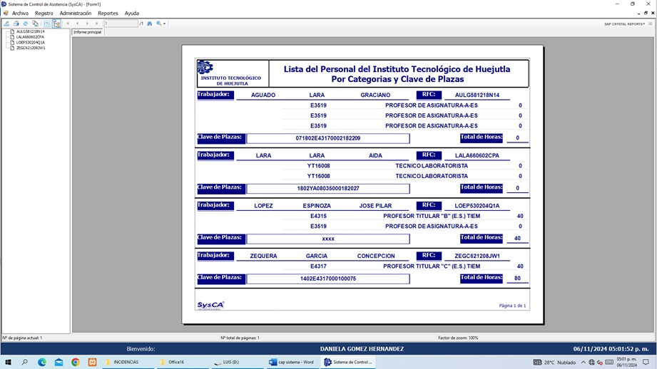
En este apartado se muestran los (Trabajadores por Categorias y Plazas), por igual se pueden descarghar en el formato que se te pida.
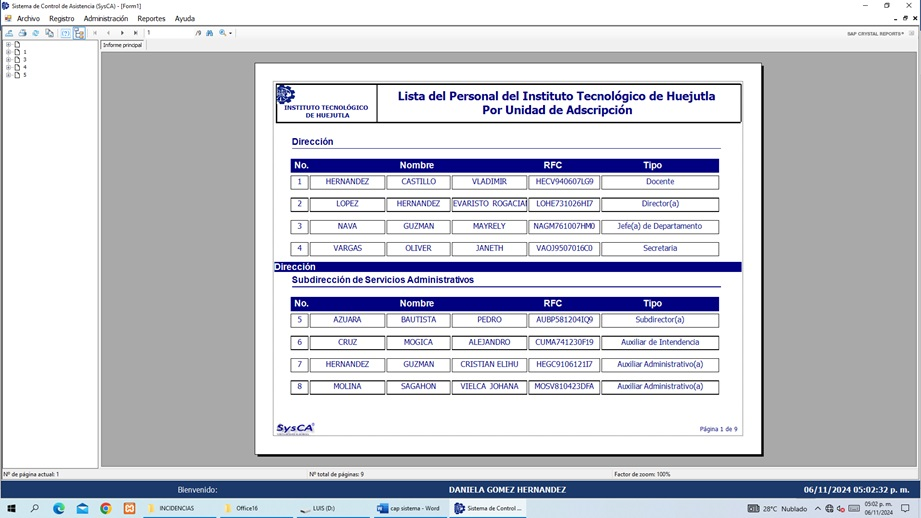
En este apartado se muestran los (Trabajadores por Unidad de Adscripcion), por igual se pueden descarghar en el formato que se te pida.
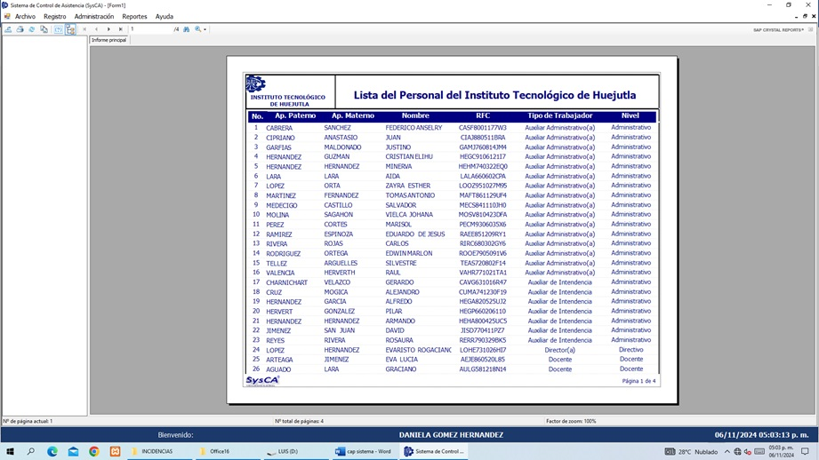
En este apartado se muestran los (Trabajadores por Tipo de Trabajador), por igual se pueden descarghar en el formato que se te pida.
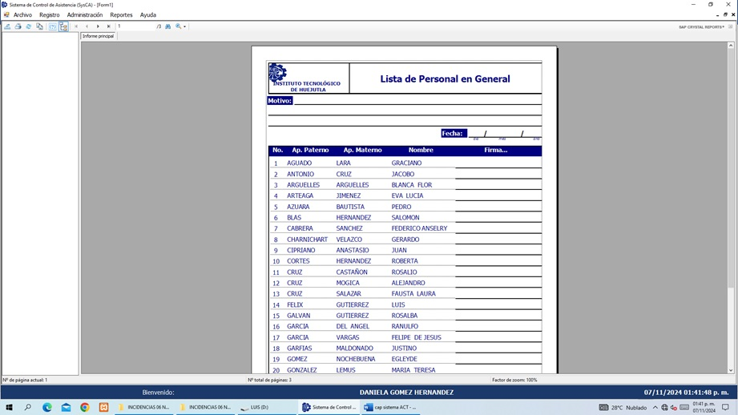
En este apartado se muestran los (Lista de Personal en General), por igual se pueden descarghar en el formato que se te pida.
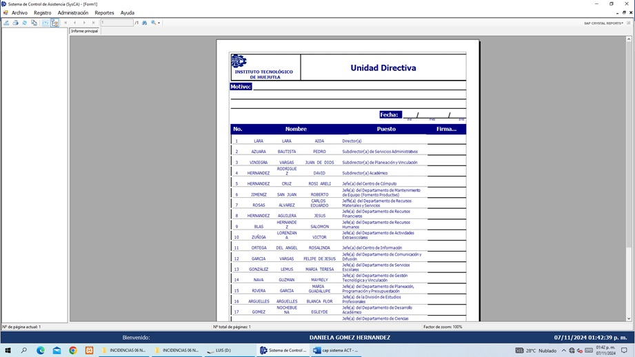
En este apartado se muestran los (Lista de Personal Unidad Directiva), por igual se pueden descarghar en el formato que se te pida.
En este apartado se muestran los (Lista de Personal Administrativos), por igual se pueden descarghar en el formato que se te pida.
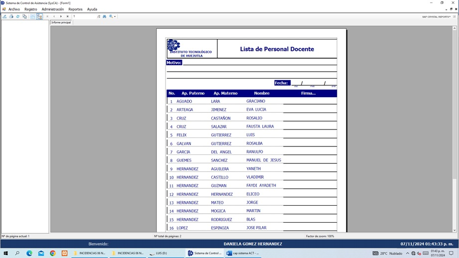
En este apartado se muestran los (Lista de Personal Docentes), por igual se pueden descarghar en el formato que se te pida.
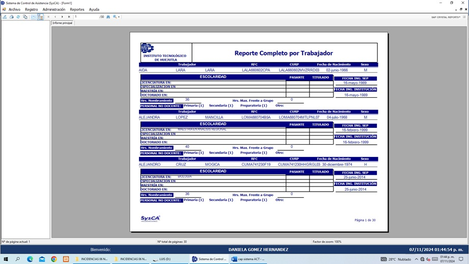
En este apartado se muestran los (trabajadores tompleto), por igual se pueden descarghar en el formato que se te pida.
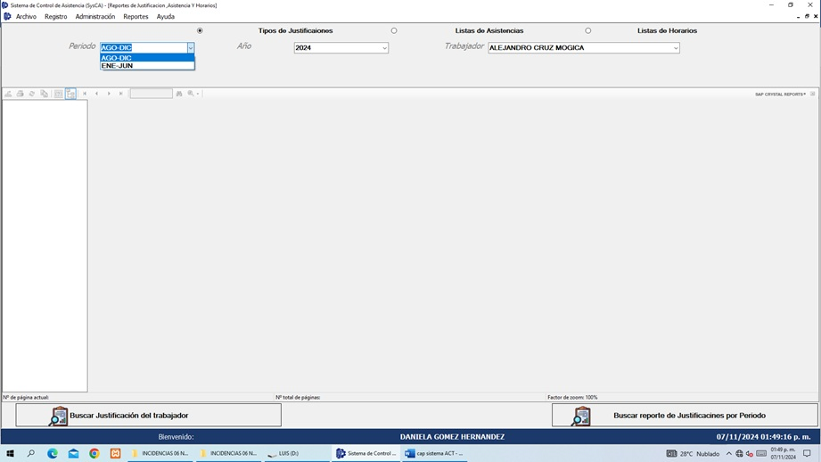
En este apartado se muestran los (Trabajadores Asistencia y Justificacion), llenamos los datos que nos solicitan dependiendo al profesor que buscamos, como el periodo, tipos d ejustificacion, el año, el trabajador y abajo vienen dos botones al cual seleccionamos el que nos pidan
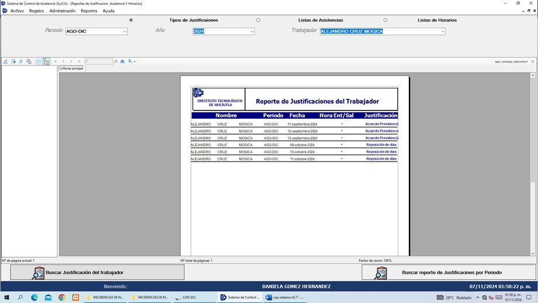
Si llegamos a seleccionar "buscar reporte de justificacion por periodo", nos arrojara las justificaciones del docente de todo el periodo, al igual que a los demas podemos descargar en el morfamto que nos indiquen
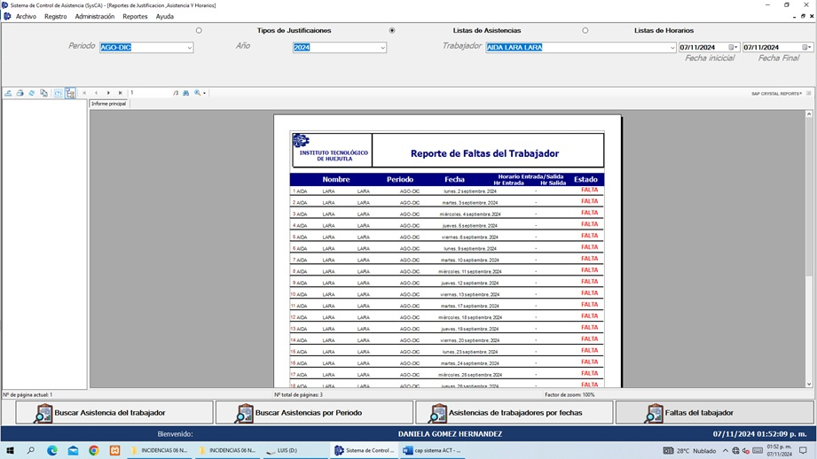
Al ingresar a "Listas de Asistencia", nos arroja 4 opciones que serian (Buscar Asistencia del Trabajador), (Buscar Asistencis por Periodo), (Asistencias de Trabajadores pñor Fechas), (Faltas del Trabajador), dependiendo a lo que nos pidan puedes busacar
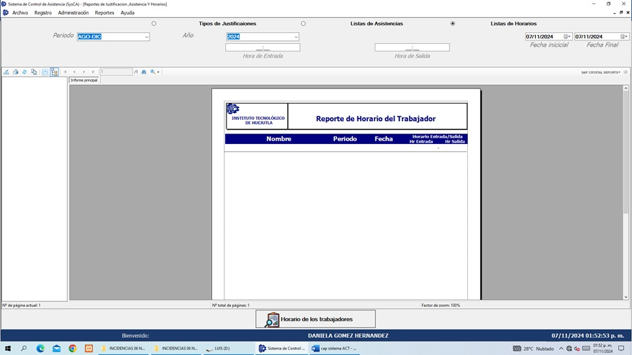
Por ultimo en este apartado "Listas de Horario", y al darle click en (Horario de Trabajadores), nos mostrara todos sus horarios dependiendo el trabajador que busquemos.
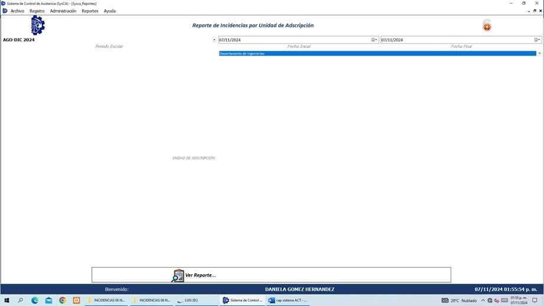
Los docentes estan dispersos en diferentes depanrtamentos y esto lo hace mas facil encontrarlos.
Si queremos buscar las incidencias de los profesores de una area determinada, la gefa del RH debera proporcionarte unas listas de los docentes que conforman esas areas para facilitarte el trabajo.
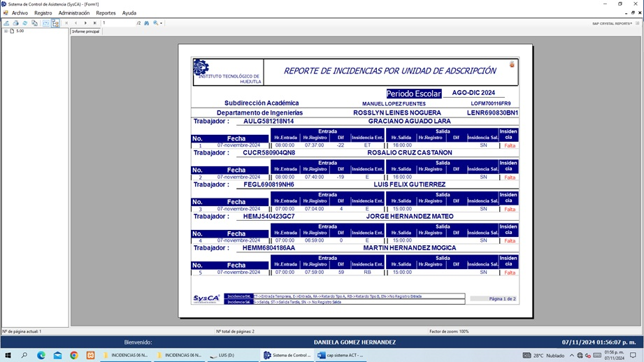
Ya teniendo agregado los datos que se te pide deberas darle clck en "Ver reporte", y te apareceran solo los docentes que conforman esa area especifica que proporcionaste.
Aqui aparecen los datos de las jornadas extras de cada uno de los trabajadores, todo esto se puede imprimir o descargar segun como te lo encarguen.
Igual en notas buenas aparecen cuando algun docente tiene notas buenas.
En este apartado es lo contrario de las notas buenas.
Antes ya habia comentado sobre los tipos de justificaciones pero en este apartado estan correctamente escritos.
Al descargar las incidencias de los docentes, debe de tener un mpotivo por ello estan los tipos por el cual esta la incidencia como se muestra en a imagen.
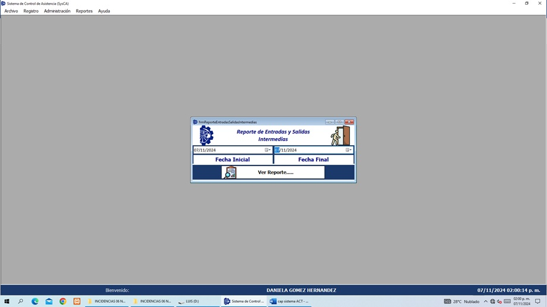
Tambien se lleva un control de las entradas y salidas de los docentes, seleccionamos la fechas en las que queremos sacar los datos y le damos click en ver reporte.
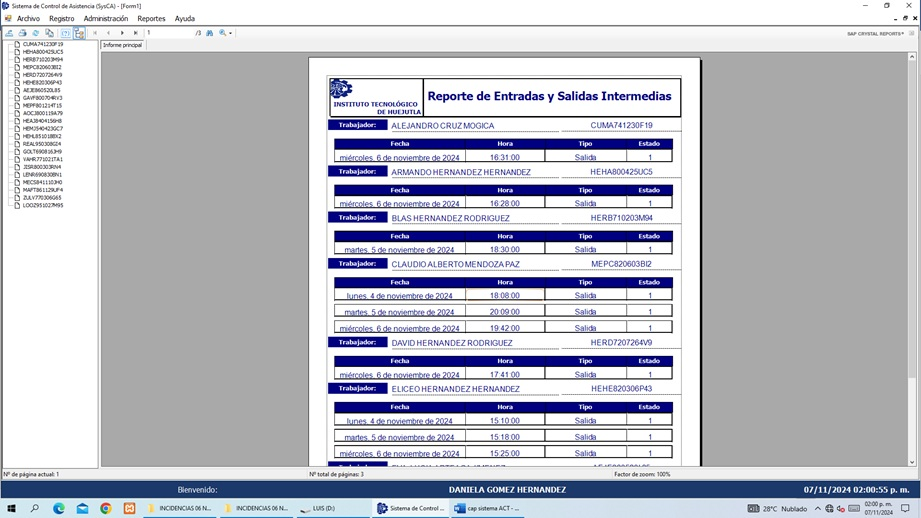
Nos arrojara un reporte en donde estan las entradas o salidas de los docentes.
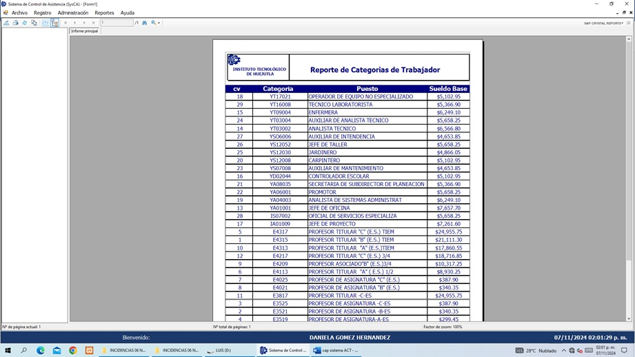
Antes ya habia mencionado sobre las categorias y los gefes de areas y si querermos sacar esos datos los encontramos en esta parte, por igual se pueden descargar o imprimir.
Aqui nos muestra toda la informacion de los periodos escolares que hemos creamos tanto informacion si estan activo o no.